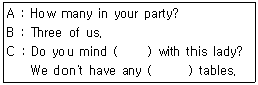
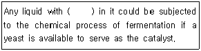
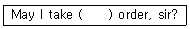
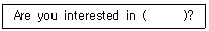

조주기능사 (2003-10-05 기출문제)
1과목: 주류학개론
1. 다음 중 식사전에 에프리티프(Aperitif Drink)로 제공하기에 가장 적당한 술은?
- 쉐리주
- 적포도주
- 위스키
- 브랜디
(정답률: 66%)

2. 다음 중 연결이 잘못된 것은?
- Still wine - Table wine
- Sparkling wine - Dessert wine
- Fortified wine - Champagne
- Aromatized wine - Vermouth
(정답률: 42%)
3. 다음 중 식사전의 칵테일(Before dinner cocktail)로 가장 적당한 것은?
- Orange Blossom
- Gin Fizz
- Dry Martini
- May Blossom
(정답률: 72%)
4. 다음 중 칵테일에 사용되지 않는 시럽(syrup)은?
- Plain syrup
- Gum syrup
- Grenadine syrup
- Maple syrup
(정답률: 50%)
5. 위스키의 상품명 중 조니워커(Johnnie Walker)는 어떠한 종류의 위스키를 말하는가?
- 아이리쉬 위스키(Irish Whisky)
- 스카치 위스키(Scotch Whisky)
- 아메리칸 위스키(American Whisky)
- 카나디안 위스키(Canadian Whisky)
(정답률: 71%)
6. 다음 중 증류주인 것은?
- 벌머스(Vermouth)
- 샴페인(Champagne)
- 쉐리주(Sherry)
- 럼주(Rum)
(정답률: 75%)
7. 다음 중 브랜디는 어느 것인가?
- Johnnie Walker
- John Jameson
- Cognac
- White Horse
(정답률: 53%)
8. 코냑(cognac)은 무엇을 원료로 만든 술인가?
- 감자
- 옥수수
- 보리
- 포도
(정답률: 60%)
9. 다음 중 천연 발포성 포도주는 어느 것인가?
- 쉐리(Sherry)
- 적포도주(Red wine)
- 샴페인(Champagne)
- 사이다(Cider)
(정답률: 75%)
10. 다음 사항 중 원료와 제법의 관계가 일치하지 못하는 것은?
- Grain - Canadian whisky
- Malt - Scotch whisky
- Corn - Canadian whisky
- Rye - Canadian whisky
(정답률: 54%)
11. 다음 중 리큐르(Liqueur)와 관계가 없는 것은?
- 코디알(Cordials)
- 아르노.드.빌네브(Arnaud de Villeneuve)
- 베네딕틴(Benedictine)
- 돔 페리논(Dom Perignon)
(정답률: 65%)
12. 다음의 V. D. Q. S 표시는 무엇을 뜻하는가?
- 원산지의 관리 증명이다.
- 품질검사 합격 증명이다.
- 포도주의 성숙도를 뜻한다.
- 가장 좋은 와인을 표시한 것이다.
(정답률: 38%)
13. 다음 중 그레나딘(Grenadine)이 필요한 칵테일은?
- 위스키 사워(Sour)
- 바카디(Bacardi)
- 카루소(Caruso)
- 마가리타(Margarita)
(정답률: 48%)
14. 드라이 마티니 칵테일을 만드는데 필요한 글라스(Glass)는?
- Brandy Glass
- Wine Glass
- Sherry Glass
- Mixing Glass
(정답률: 73%)
15. Gibson을 조주할 때 고명은 무엇으로 하는가?
- Olive
- Cherry
- Onion
- Lime
(정답률: 85%)
16. Gin Fizz Cocktail에는 어느 것이 필요한가?
- Whisky
- Cola
- Cider
- Soda water
(정답률: 76%)
17. 다음의 재료들은 포세 카페(Pousse cafe) 칵테일에 해당된다. 최후로 따르는 재료는 어느 것인가?
- Brandy
- Creme de cacao
- Peppermint
- Violet
(정답률: 71%)
18. 칵테일을 만드는데 필요한 기물은 어느 것인가?
- castor
- wine glass
- shaker
- sauce pot
(정답률: 100%)
19. 다음 중 Shaker의 3대 부분에 속하지 않는 것은?
- Strainer
- Cap
- Face
- Body
(정답률: 69%)
20. 다음 중 비터나 리큐르를 비터병에 넣어 정해진 양만을 비터병을 거꾸로 해서 뿌리거나 끼얹는 것은?
- Drop
- Double
- Dry
- Dash
(정답률: 64%)
21. 일반적으로 가장 많이 사용하는 Cocktail Glass의 용량은 몇 ml 인가?
- 30 ml
- 60 ml
- 90 ml
- 120 ml
(정답률: 36%)
22. 칵테일의 기본 5대 요소와 가장 관계가 먼 것은?
- Decoration (맛)
- Method (방법)
- Glass (잔)
- Flavor(향)
(정답률: 63%)
23. 호텔 바나 레스토랑에서 칵테일이나 주류의 "단맛이 없다." 라는 것을 표현하는 용어는?
- Bitter
- Sweet
- Sour
- Dry
(정답률: 84%)
24. 다음 중 뜻이 전혀 다른 것은?
- 슈냅스(Schnaps)
- 봐서(Wasser)
- 가이스트(Geist)
- 뮤슈(Mousseux)
(정답률: 49%)
25. 파 스탁(Par stock)이란 무엇인가?
- 적정 재고량
- 총판매량
- 매출원가
- 재고정리
(정답률: 81%)
26. 다음 중 현재 일반인들에게 많이 알려진 소주는 어디에 포함되는가?
- 희석식 소주
- 전통 민속주
- 증류식 소주
- 전통 약용소주
(정답률: 69%)
27. 다음 중에서 Cherry로 장식하지 않는 칵테일은?
- Angel's Kiss
- Manhattan
- Rob Roy
- Martini
(정답률: 75%)
28. 오렌지 쥬스를 사용한 칵테일에 잘 어울리는 장식재료는?
- 체리(cherry)
- 올리브(olive)
- 오렌지(orange)
- 레몬(lemon)
(정답률: 82%)
29. 다음 중 혼성주에 속하는 것은?
- 소주
- 꼬냑
- 포도주
- 과실주
(정답률: 65%)
30. 다음 중 맥주의 대부분은 어떠한 방법으로 만들어지는가?
- 고온발효
- 상온발효
- 하면발효
- 상면발효
(정답률: 64%)
2과목: 주장관리개론
31. 마티니(Martini)를 만들 때 필요치 않는 주장 기물은?
- 믹싱글라스(Mixing Glass)
- 바 스트레이너(Bar Strainer)
- 바 스푼(Bar Spoon)
- 아이스픽(Ice Pick)
(정답률: 83%)
32. 바텐더(Bartender)의 업무 규칙 중 잘못 설명된 것은?
- 칵테일 레시피는 규정된 처방에 준하여 만들어야 한다.
- 요금의 영수관계를 명확히 해야 한다.
- 단골 고객이나 동료 종사원에게 음료를 무료로 제공하는 것을 금한다.
- 빈 술병은 허락없이 고객이나 동료에게 줄 수 있다.
(정답률: 90%)
33. 소멜리어(Sommelier)의 주된 임무는?
- 주장 기물관리
- 주류 저장관리
- 칵테일 조주봉사
- 와인 판매봉사
(정답률: 75%)
34. 주류저장관리제도를 설명한 것 중 틀린 것은?
- 주문시에는 서면 구매 청구서를 사용한다.
- 검수시에는 송장(invoice)과 구매청구서를 대조 체크한다.
- 영속적인 재고조사(Perpetual Inventory) 시스템을 든다.
- 업장 바의 창고(Bar well)에는 한달분의 재료를 저장한다.
(정답률: 85%)
35. 파티 때 디저트(Dessert) 코스로 서브하기에 부적당한 것은?
- 코인트루(Cointreau)
- 크렘 드 카카오(Creme de cacao)
- 슬로우 진(Sloe gin)
- 비어(Beer)
(정답률: 75%)
36. 구매부서의 기능이 아닌 것은?
- 검수
- 저장
- 불출
- 판매
(정답률: 74%)
37. First in first out(F.I.F.O : 선입선출)이란?
- 매상관리방법
- 칵테일 조주방법
- 저장관리방법
- 노무 관리방법
(정답률: 97%)
38. Cork Screw 를 사용하는 것은?
- Wine Bottle
- Canned
- Ice Tong
- Ice Cube
(정답률: 75%)
39. 바람직한 바텐더(Bartender) 상이 아닌 것은?
- 바(Bar)내에 필요한 물품 재고를 항상 파악한다.
- 일일 판매할 주류가 적당한지 확인한다.
- 바(Bar)의 환경 및 기물 등의 청결을 깨끗이 유지 관리한다.
- 칵테일 조주 시 지거(Jigger)를 사용하지 않는다.
(정답률: 93%)
40. 주장(Bar)에서 사용하는 기물이 아닌 것은?
- Champagne Cooler
- Soup Spoon
- Lemon Squeezer
- Decanter
(정답률: 90%)
41. 과일과 과즙의 선택과 보관 방법 중 틀린 것은?
- 캔(can)에 들어 있는 과일을 사용하는 것이 좋다.
- 과일은 잘 익고 신선해야 한다.
- 신선도를 유지하기 위하여 냉장고에 넣어 보관한다.
- 과일을 자를 때 칼을 잘 닦아 사용한다.
(정답률: 91%)
42. 코스터(Coaster)의 용도는?
- 잔 닦는 용
- 잔 받침대 용
- 남은 술 보관용
- 병마개 따는 용
(정답률: 82%)
43. 쉐이커의 구성 요소가 아닌 것은?
- 탑(Top)
- 바디(Body)
- 스토퍼(Stopper)
- 스트레이너(Strainer)
(정답률: 74%)
44. Wine Sellar 에 관한 설명 중 옳지 않은 것은?
- 와인을 저장하는 창고이다.
- 적정온도는 10 - 13綽이다.
- 습도는 75% 정도로 유지한다.
- 햇볕을 잘 쪼이게 해야 한다.
(정답률: 86%)
45. 생맥주 관리법 중 틀린 것은?
- 생맥주는 생선회와 같아서 신선할 때 빨리 소비한다.
- 생맥주를 다룰 때 넘치는 거품을 깨끗한 용기에 받아서 따로 판매한다.
- 거품이 약할 때는 CO2 가스를 체크한다.
- 정기적으로 노후된 생맥주 관을 교체해 준다.
(정답률: 94%)
46. 다음 중 성질이 다른 하나는?
- 진저엘(Gingerale)
- 토닉워터(Tonic water)
- 소다수(Soda Water)
- 브랜디(Brandy)
(정답률: 89%)
47. 쿨러(cooler)의 종류에 해당되지 않는 것은?
- Jigger cooler
- Cup cooler
- Beer cooler
- Wine cooler
(정답률: 80%)
48. 바(bar)에서 사용한 글라스(glass) 세척에 대한 설명이 아닌 것은?
- 글라스 세척용 중성세제를 사용한다.
- 두 번 이상 행군다.
- 세척한 글라스는 잔의 테두리를 잡고 운반한다.
- 세척한 글라스는 종류별로 보관한다.
(정답률: 83%)
49. 바텐더(Bartender)가 영업개시 전에 준비하지 않아도 되는 것은?
- 레드와인(Red Wine)을 냉각시킨다.
- 칵테일용 얼음을 준비한다.
- 글라스(Glass)의 청결도를 점검한다.
- 적정재고를 점검한다.
(정답률: 85%)
50. White wine과 Red wine의 보관 방법 중 가장 알맞는 방법은?
- 가급적 통풍이 잘되고 습한 곳에 보관하여 숙성을 는다.
- 병을 똑바로 세워서 침전물이 바닥으로 모이도록 관한다.
- 따뜻하고 건조한 장소에 뉘여서 보관한다.
- 통풍이 잘 되는 장소에 보관 적정온도에 맞추어서 병을 뉘여서 보관한다.
(정답률: 73%)
3과목: 고객서비스영어
51. 괄호속 내용은 순서대로 바르게 표기한 것은?

- to sit, empty
- sit, vacant
- sitting, empty
- sits, vacant
(정답률: 56%)
52. Please, select the cocktail based Brandy in the following.
- Cablegram
- Bull Shot
- Bulldog Highball
- B & B Cocktail
(정답률: 61%)
53. "The Smell of a wine when it's young that reveals its grape" 에 해당하는 뜻은 다음 중 어느 것인가?
- Body
- Aroma
- Rough
- Charactor
(정답률: 62%)
54. 다음 ( ) 안에 적당한 단어를 고르시오.

- alcohol
- carbon dioxide
- sugar
- carbohydrate
(정답률: 40%)
55. 다음 ( ) 안에 맞는 단어는?

- your
- you
- he
- she
(정답률: 81%)
56. Which of the following are made from grape?
- Calvados
- Rum
- Gin
- Brandy
(정답률: 59%)
57. 다음 ( )안에 알맞은 단어는?

- Make cocktail
- Made cocktail
- Making cocktail
- a making cocktail
(정답률: 63%)
58. "나는 전에 서울에 가본 적이 있다." 를 바르게 영작한 것은?
- I have been Seoul before.
- I have go to Seoul before.
- I had to go to Seoul before.
- I have been to Seoul before.
(정답률: 57%)
59. "이 곳은 우리가 머물렀던 호텔이다."로 맞는 것은?
- This is a hotel that we staying.
- This is the hotel where we stayed.
- This is a hotel which we stayed.
- This is the hotel where we stay.
(정답률: 66%)
60. Our shuttle bus leaves here 10 times ( 괄호 ).
- in day
- the day
- day
- a day
(정답률: 63%)